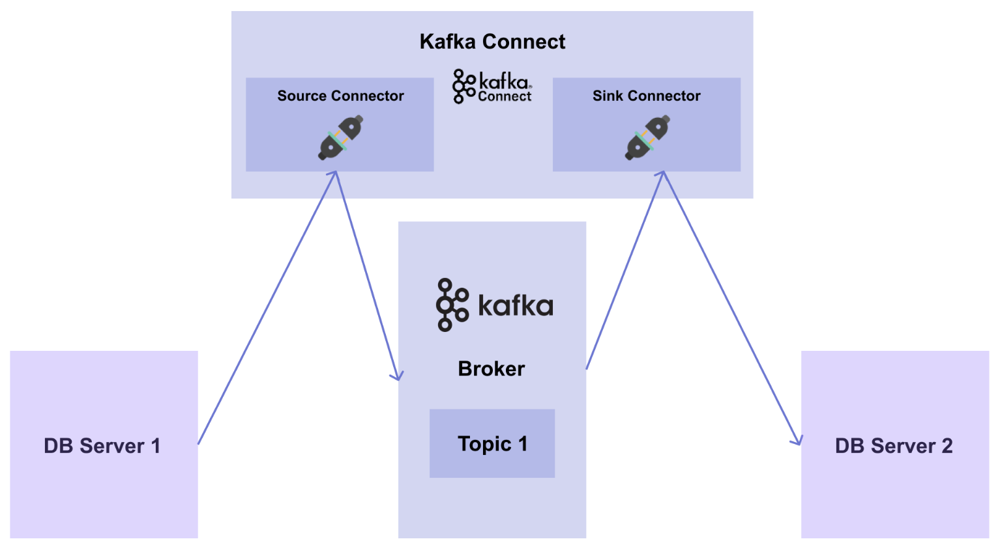
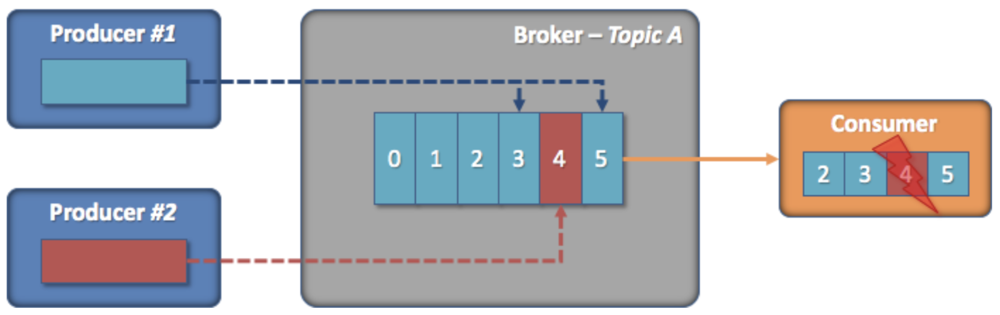
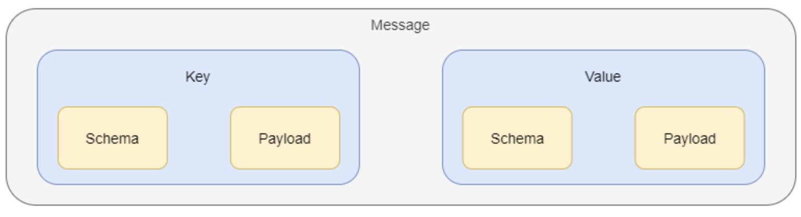
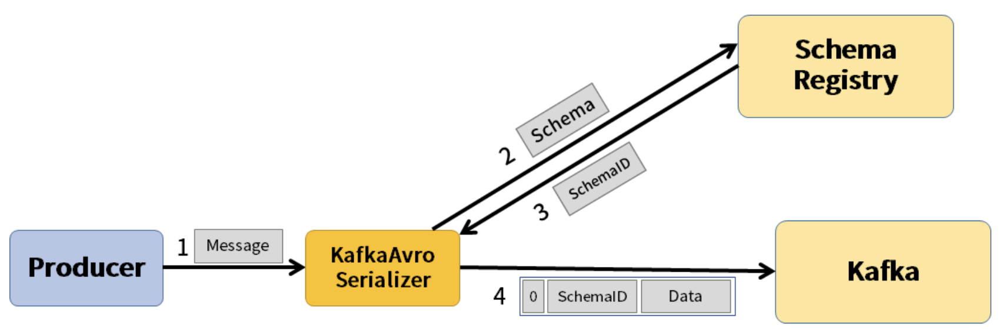

MLOps for MLE - 17
Summary
- Kafka 의 Connect 와 Connector 에 대해 알아봄
실습을 진행했던 코드를 보고싶으시다면 여기를 눌러주세요
실습
1. Producer & Consumer 의 한계
Kafka 는 이전의 내용(Day16 참고)처럼 Producer 와 Consumer client 를 통해 메시지 파이프라인을 쉽게 구성할 수 있음
하지만 실제 시스템에서는 다름
DB Server 1 로부터 데이터를 가져오는 Producer 가 있고, 데이터를 브로커의 어떤 토픽으로 보낸 뒤, Consumer 가 DB Server 2에 데이터를 전달하는 과정이 있음
하지만 이렇게 전달할 DB 들이 100개, 1000개가 된다면 Producer 와 Consumer 를 100개, 1000개로 만들어야 함
하지만 메시지 파이프라인 구성을 위해 매번 Producer 와 Consumer 를 개발하는 것은 쉽지않음
이러한 문제를 해결하여 더 간편하고 효율적으로 메시지 파이프라인을 구축하는 방법으로 Connect 와 Connector 라는 것이 탄생하게 되었음
2. Connect & Connector 소개
Connect 는 데이터 시스템과 Kafka 간의 데이터를 확장 가능하고, 안전한 방법으로 streaming 하기 위한 도구임
Connect 를 사용하기 위해서는 데이터를 어디로부터 가져오는지, 어디에다가 전달해야 하는지를 알려주는 Connector 를 정의해야 함
여기서 Connector 는 메시지 파이프라인에 대한 추상 객체이며, task 들을 관리함
Connect 와 Connector 의 역할을 살펴보면, Connect 는 프레임워크이고 Connector 는 그 안에서 돌아가는 플러그인임
따라서 Connect 프레임워크를 실행하고 특정 Connector 플러그인을 실행시키면 메시지 파이프라인을 쉽게 구축할 수 있음
2.1 Connector 의 종류
Source Connector
- Source system 의 데이터를 브로커의 토픽으로 publish 하는 Connector 임
- Producer 의 역할을 하는 Connector
Sink Connector
- 브로커의 토픽에 있는 데이터를 subscribe 해서 target system 에 전달하는 Connector 임
- Consumer 의 역할을 하는 Connector
이를 그림으로 나타내면 다음과 같음

3. Schema Registry 소개
Kafka 는 decoupling 이라는 특징을 가지고 있음
Producer 와 Consumer 가 존재하고, 서로 의존적이지 않고 완벽하게 분리되어 있음
또한 브로커는 메시지를 한 번 저장하면 이후에는 수정할 수 없음
이러한 구조적인 특징과 내부 구조로 인해 Kafka 운영에서는 다음과 같은 상황이 발생할 수 있음

- Producer 1과 2는 각자 브로커의 토픽 A 에 메시지를 보냄
- Consumer 는 토픽 A 에 있는 메시지를 읽음
- 이때, Producer 2가 schema 를 변경하여 메시지 (4번)를 발행함
- 하지만 Consumer 는 이 상황을 알지 못하기 때문에 4번 메시지를 구독하여 처리하는 과정에서 메시지를 읽어들이지 못하고 장애가 발생함
위와 같은 상황처럼 결국 구조적인 결합도는 낮췄지만 내부적인 결합도 문제는 여전히 가지고 있게 됨
이러한 문제에 더하여 동일한 schema 의 메시지가 계속 들어오는 경우, 같은 schema 를 계속해서 저장해야하기 때문에 메시지의 크기가 커지며, schema 가 중복이 되어 불필요한 데이터 용량을 차지하게 됨
이러한 구조적인 결합도를 낮추고 불필요한 데이터 용량을 줄이기 위해 Kafka 에서는 Schema Registry 를 사용함
Schema Registry 란 메시지의 Schema 를 저장해주는 일종의 저장소임
다음은 Kafka Connector 가 만들어 내는 메시지 구조임

메시지는 key 와 value 로 구성되어 있으며, 각 key 와 value 는 schema 와 payload 로 구성되어 있음
여기서 key 는 PK 와 같이 데이터를 식별할 수 있는 정보가 들어있고, value 는 데이터의 전체 값이 들어있음
payload 는 데이터 값이 저장되며, schema 에는 이 데이터 값의 데이터 타입이 명시되어 있음
다음 그림은 Producer, Schema Registry, Kafka 간의 관계를 나타냄

각 컴포넌트가 작동하는 순서는 다음과 같음
- Producer 에서 Kafka 의 Serializer (또는 Converter) 에게 메시지를 보냄
- Serializer 는 메시지를 받아 메시지의 schema 를 Schema Registry 에 보냄
- 이어서 schema ID 를 받고, schema ID 와 데이터를 Kafka 에게 보냄
-> Connect 와 Connector 를 이용할 때는 Serializer 를 직접 구현할 필요없이 Connect 를 띄울 때 환경 변수로 적어주면 됨
앞서 살펴봤던 schema 중복 문제는 Schema Registry 에 key 와 value 에 명시된 schema 를 따로 저장하기 때문에 Connector 가 schema 대신 Schema Registry 의 schema ID 를 명시하여 해결할 수 있게 됨
Schema ID 를 쓰면 메시지의 크기가 줄어들어 불필요한 데이터의 용량도 줄일 수 있음
또한 내부적인 결합도 문제는 Schema Registry 에서 제공하는 기능 중 하나인 schema 호환성 규칙 강제 기능으로 해결할 수 있음
Schema 호환성 규칙 강제란 schema 를 등록하여 사용할 수 있지만, schema 버전 간의 호환성을 강제함으로써 일종의 규칙을 세우는 것임
Ex) Backward, Forward, Full compatibility